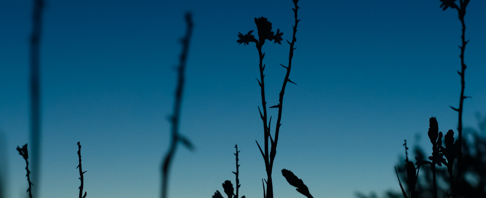
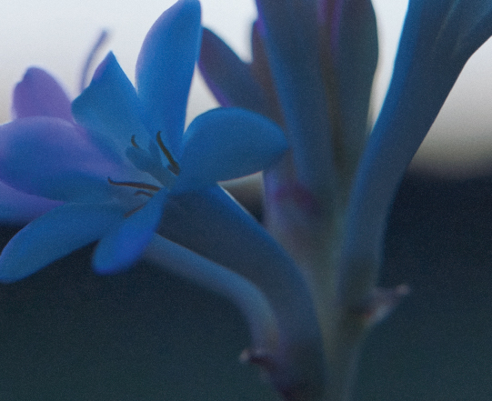
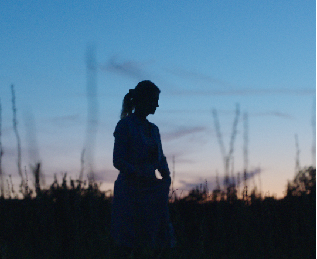

{{EN: At twilight||PL: PO ZMIERZCHU}}
{{EN: The last rays of sun are disappearing over the Grasse fields. Twilight is a magical hour and the perfect time to harvest Grasse Tuberose that diffuses all the power of its perfume in the new J’adore eau de parfum Infinissime.||PL: Ostatnie promienie słońca znikają nad polami Grasse. Zmierzch to magiczna godzina i doskonały czas na zbiór Tuberozy z Grasse, która roztacza całą moc swoich aromatów w nowym J'adore eau de parfum Infinissime.}}